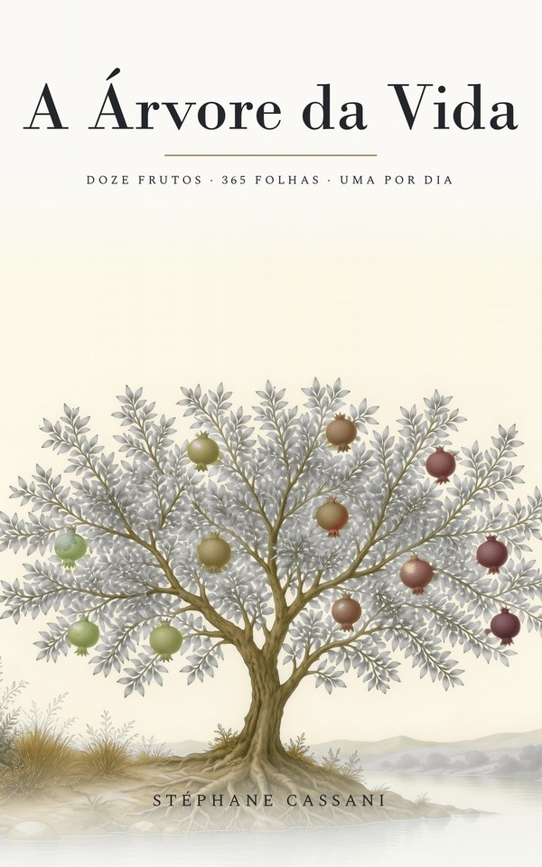

A Árvore da Vida
Stéphane Cassani — Éditions Mania Libris
“… a árvore da vida, que produz doze frutos, dando seu fruto a cada mês; e as folhas das árvores são para a saúde das nações.” — Apocalipse 22:2
Doze frutos, trezentas e sessenta e cinco folhas. Uma porção das Escrituras por dia, em ordem, durante um ano — texto da Bíblia Livre, uma meditação curta, e nada mais. O livro não tem ano marcado: pode ser começado a qualquer momento, e recomeçado.
O marcador de páginas com o calendário é gratuito nos dois casos.
- Formato152 × 229 mm, 210 páginas
- KindleASIN B0HKLHDJLD
- BrochuraISBN 9798176227239
- Texto bíblicoBíblia Livre, CC BY 3.0 BR
- EditoraÉditions Mania Libris
Obra concebida, dirigida, revista e validada por Stéphane Cassani. Algumas meditações foram redigidas, as ilustrações criadas e a tradução feita com a ajuda de ferramentas de inteligência artificial, sob a revisão e a validação do autor.
Citações bíblicas: Bíblia Livre (BLIVRE), © Diego Santos, Mario Sérgio e Marco Teles, licença Creative Commons Atribuição 3.0 Brasil.
O marcador com o calendário

Gratuito, todos os anos
O livro não tem ano; o marcador faz a ponte. Ele associa cada data à sua folha, e é renovado a cada dezembro.
Baixar o marcador